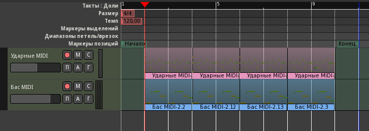

Музыкальная фраза кажется слишком короткой, поэтому растянем её на восемь тактов: разрежем регионы посередине и повторим первые два такта трижды, оставив окончание. Перед этим сетку на панели инструментов переключим на Такты и установим режим редактирования Слайд, потому что в режиме Блок перемещение отключено. Перетаскиваются регионы инструментом Захват, за середину, копируются так же, но с зажатой кнопкой Ctrl.
И сразу же мы сталкиваемся с небольшой, но очень раздражающей проблемой, когда случайные ударники (обычно, крэши и некоторые сбивки) копируются вместе с основным ритмом туда, где им не место.